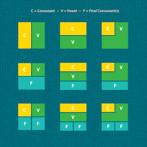

Constrained writing is a literary technique in which writer is bound by some condition that forbids certain things or imposes a pattern. In class we have looked at different constrained writing techniques:
- Snowball: A poem in which each line is a single word, and each successive word is one letter longer.
- Lipogram: Writing that excludes one or more letters. The previous sentence is a lipogram in B,F,J,K,Q,V,Y,and Z (it does not contain any of those letters).
- Prisoner's constraint: A type of lipogram that omits letters with ascenders and descenders(b,d,f,g,h,j,k,l,p,q,t,and y).
- Univocalism: A poem using only one vowel letter. In English and some other language the same vowel letter can represent different sounds, which means that, for example, "born" and "cot" could both be used in univocalism. (Wrods with the same Amercian English vowel sound but represented by different 'blwe' letters could not be used -e.g. "blue" and "stew".
- Mathew's Algorithm: Elements in a text are moved around by set of predetermined rules.
As I am fluent in Englisha and Korean, I wanted to invent a constrained writing technique that involves English and Korean. I wanted to challenge coming up with a creative technique that converts English Roman Alphabets to Korean Hanguel Alphabets.
Here are some thoughts and considerations I had as I was developing the system:
- English has upper-and lower-case system - Korean doesn't.
- Both English and Korean are written/read left to right.
- Korean letters are written in syllable blocks.

- "apostrophe" is used specifically for English but is never used in Korean.
Considereing these, I developed a technique that uses number to convert the text written in English Roman alphabets to Korean Hangeul text.
Since this is merely a conversion of Roman Alphabets to Hangeul Alphabets with number patterns and rules, although the final text in Korean is legible, it is not intelligable. Regardless, it was fascinating to see how, the two very different language systems - English Roman alphabets and Korean Hangeul alphabets can be converted to one another.